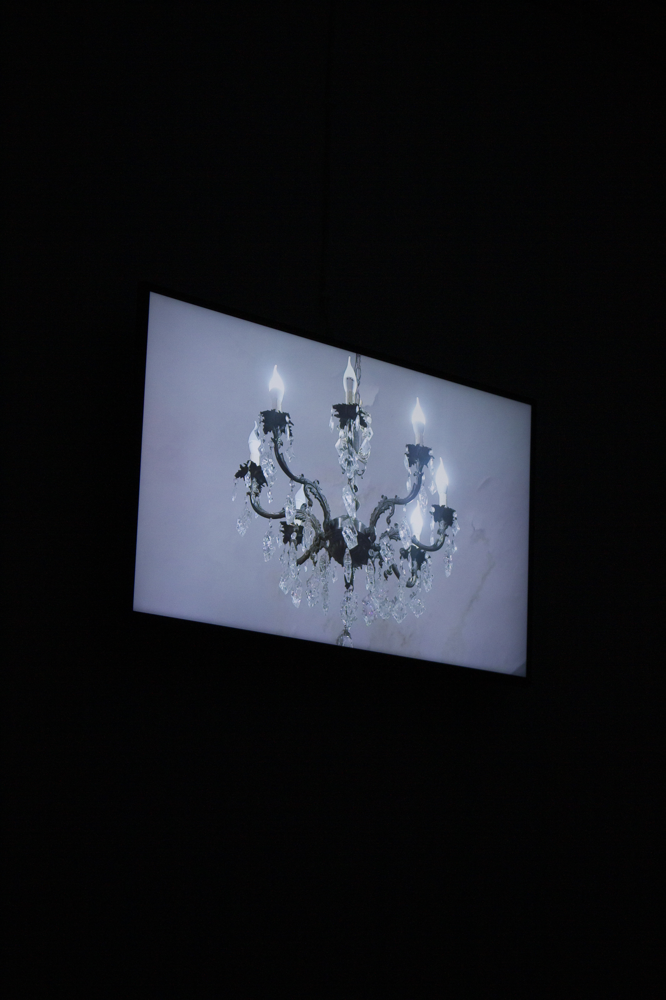
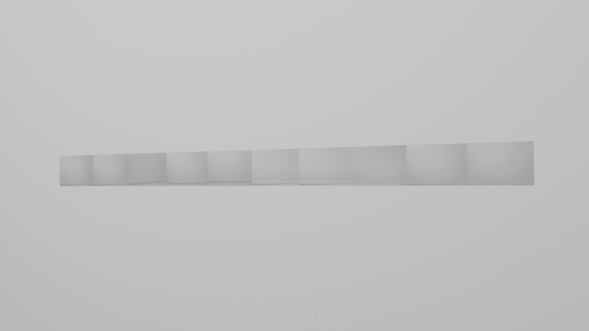
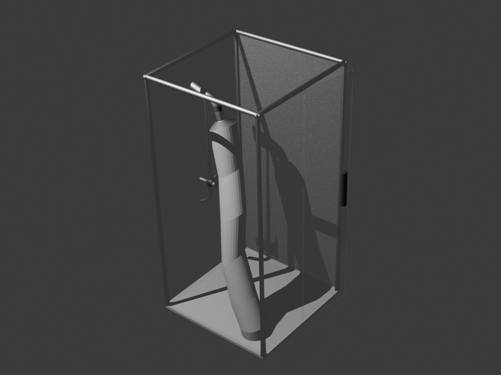
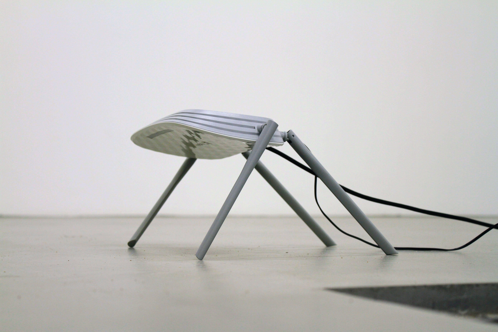
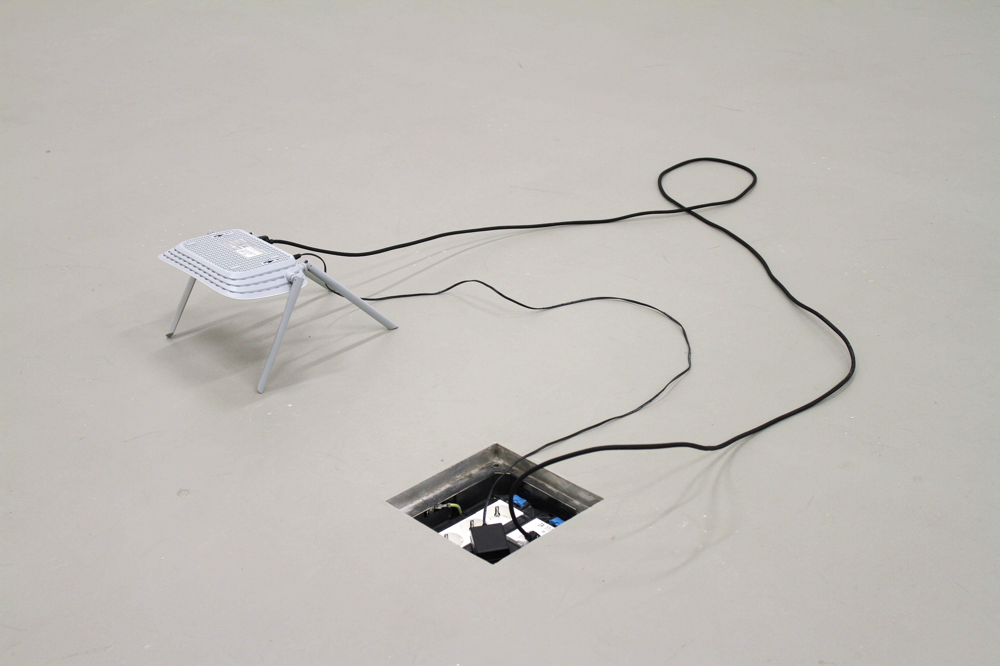

Giuseppe Dicanio (2005, Pomarico) currently attends at Accademia di Belle Arti di Roma with Prof. Pierluigi Calignano. He spent the winter semester of 2025/2026 at the Hochschule für Bildende Künste Hamburg (HFBK), studying Time-Based Media with Prof. Jeanne Faust.




